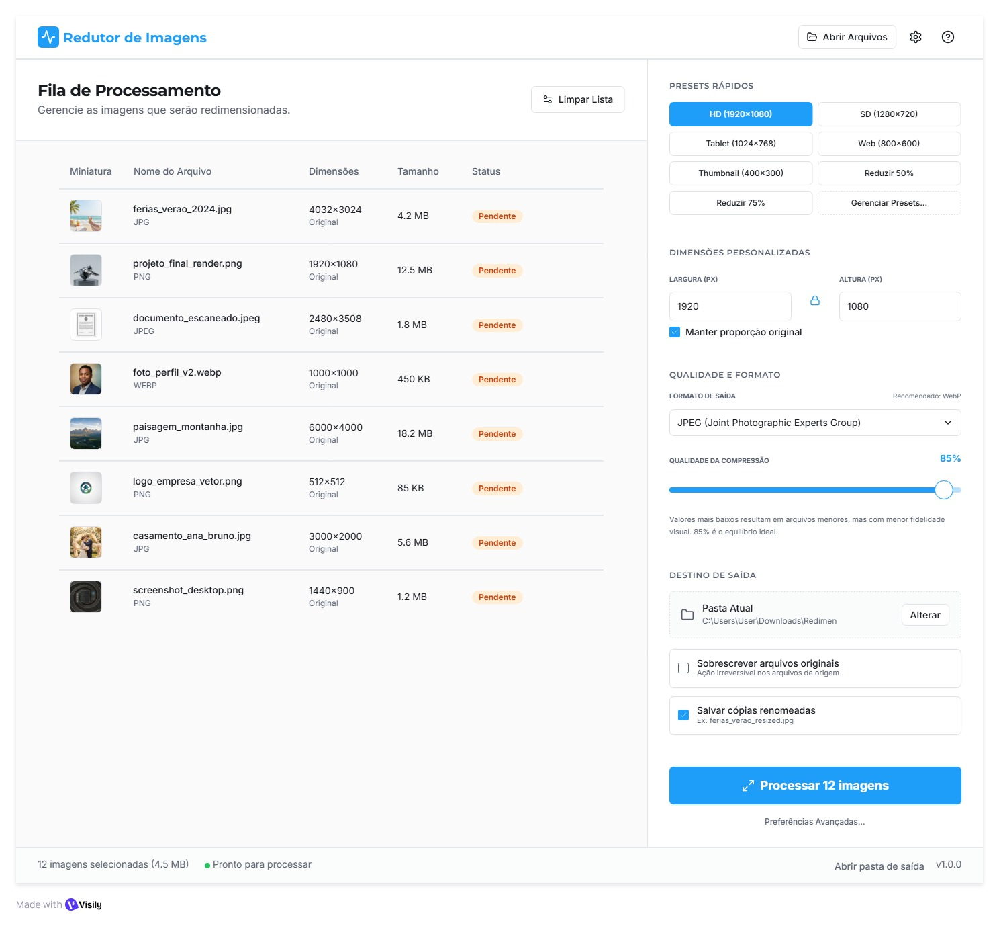
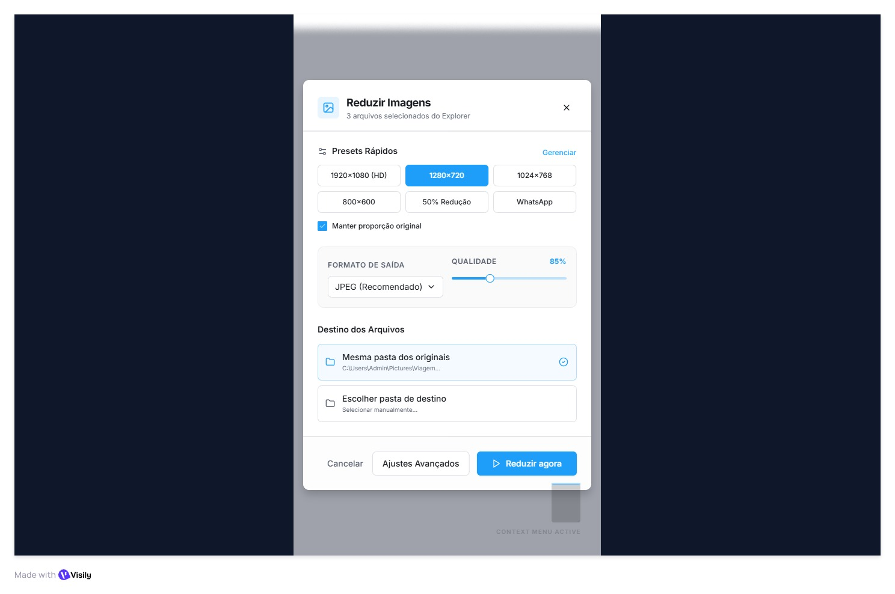
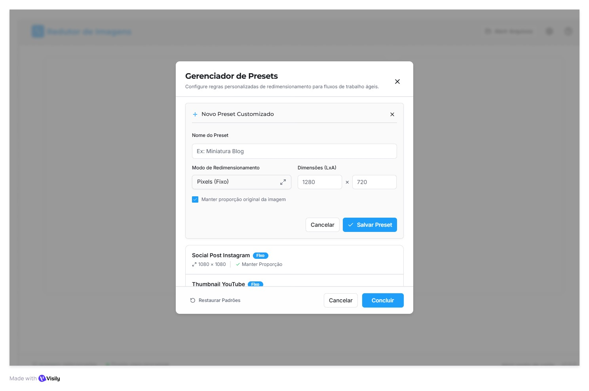
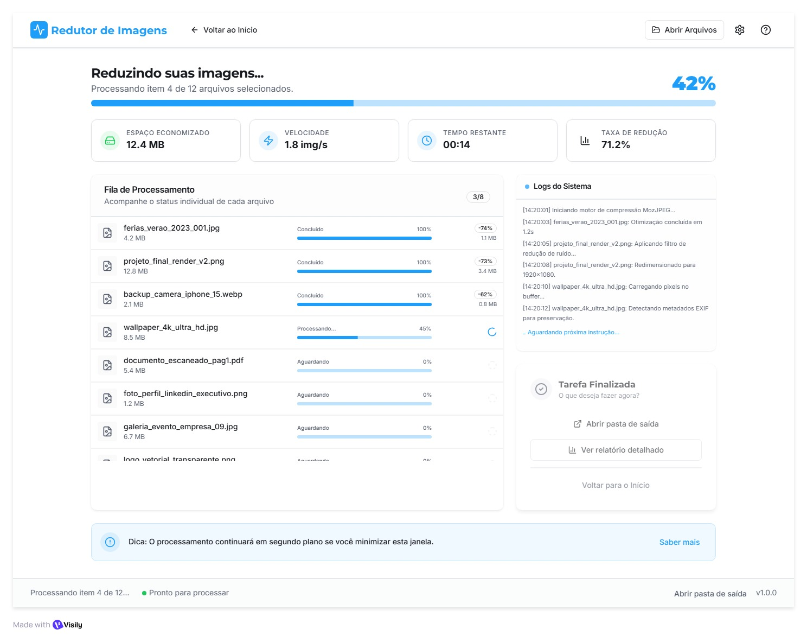
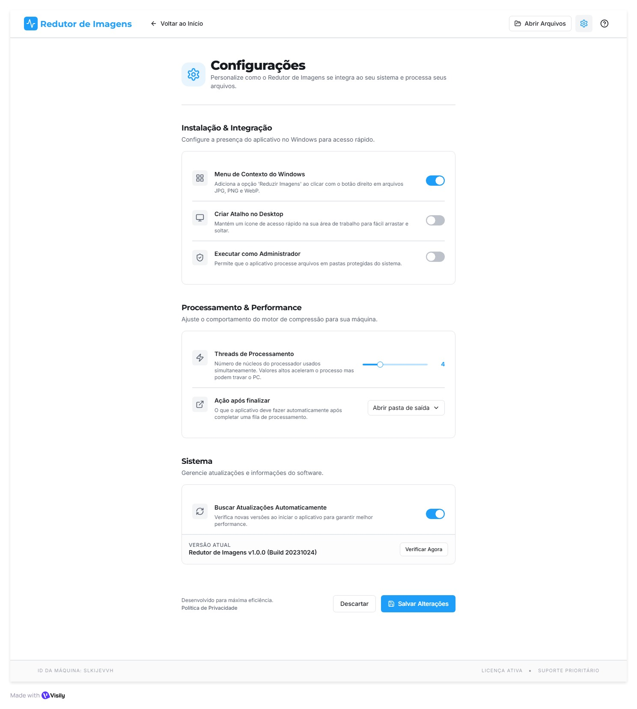

App desktop para reduzir tamanho e dimensões de imagens em lote, com presets prontos, integração ao menu de contexto do Windows e fluxo de um clique a partir do Explorador de arquivos.
Três caminhos para reduzir uma imagem — abrir e revisar na janela principal, acionar pelo menu de contexto do Explorer, ou arrastar pra um atalho. Em todos os casos o resultado é o mesmo: lote processado em background com presets reutilizáveis.
Da fila principal ao modal de contexto do Explorer, cada tela cumpre um papel específico no fluxo.
Tela que abre quando o app é executado. Lista as imagens carregadas, mostra status por arquivo e concentra todas as opções de resize no painel direito.

Modal compacto que abre automaticamente quando o usuário seleciona arquivos no Explorer e clica em "Reduzir com Redutor de Imagens". Foco na ação imediata.

Modal acessível via "Gerenciar Presets" no painel principal. CRUD de presets com modo pixels ou percentual, mais presets customizados (ex: Social Post, YouTube Thumbnail).

Tela exibida enquanto o lote roda em background. Mostra progresso global, status por arquivo, economia estimada e log ao vivo — sem bloquear o usuário.

Tela para integrações com o sistema operacional, comportamento pós-processamento e performance. Acessível via ícone de engrenagem no topo.

O fluxo principal tem dois caminhos que convergem para a tela de processamento.
Estado inicial de cada controle — sem precisar configurar nada, o app funciona.
| Controle | Comportamento padrão | Notas |
|---|---|---|
| Manter proporção | Ativado | true |
| Formato de saída | JPEG | jpeg |
| Qualidade da compressão | 85 | slider 10–100 |
| Sobrescrever original | Desligado | false |
| Salvar cópias renomeadas | Ativado | sufixo _resized |
| Pasta de saída | Mesma pasta dos originais | alternável |
| Threads de processamento | Auto detect | ajustável em Configurações |